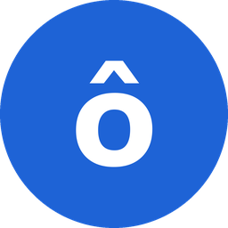
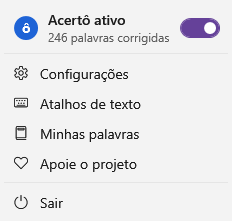

Você ainda escreve
nao
sem acento?
E perde tempo
corrigindo na mão?

Acertô
corrige enquanto você digita
Em qualquer programa do Windows
Sem clicar em nada.
Funciona em
qualquer lugar
qualquer lugar
Grátis.
Offline.
Em português.


Acertô
Baixe grátis
github.com/RichardCarraro/Acerto
Windows 10 e 11